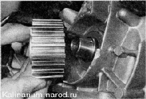

Передний сальник коленвала - заменаСнятие 1. Снимаем ремень привода ГРМ. 2. Снимаем зубчатый шкив с коленчатого вала. 3. Чтобы не потерять шпонку и не повредить ею новый сальник, плоскогубцами извлекаем шпонку из паза. При извлечении сальника не поцарапайте рабочую поверхность коленчатого вала. 4. Извлекаем сальник из посадочного отверстия специальным крючком или, завернув в него саморез пассатижами. Установка 1. Наносим чистое моторное масло на рабочую кромку нового сальника и запрессовываем его через оправку или отрезок трубы диаметром около 40 мм так, чтобы наружная кромка сальника была заподлицо с кромкой его посадочного отверстия. 2. Вставляем шпонку в паз коленчатого вала. 3. Устанавливаем зубчатый шкив на вал. Устанавливая шкив, контролируйте, чтобы шпонка при этом не выпала из паза. 4. Устанавливаем ремень привода ГРМ, шкив коленчатого вала в последовательности, обратной снятию. 5. Дальнейшую сборку выполняем в последовательности, обратной разборке.
|